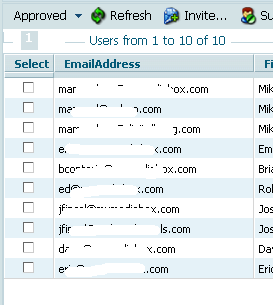
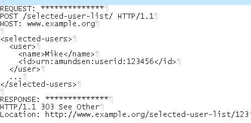
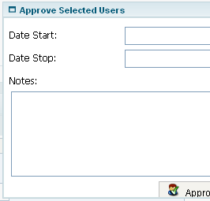
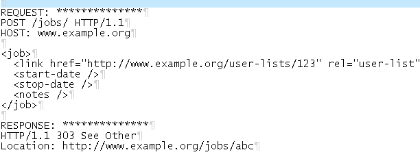
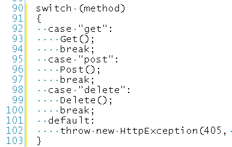

REST-ful pattern for operations on UI collections
2009-12-08 @ 19:06#
 i recently had to deal with a browser UI requirement for an HTTP-based app that allowed users to select one or more items from a list then add some additional data about the collection to allow the server to process the results. for example:
i recently had to deal with a browser UI requirement for an HTTP-based app that allowed users to select one or more items from a list then add some additional data about the collection to allow the server to process the results. for example:
select one or more emails from a list, display a dialog that allow the user to enter some start/stop date information and some notes, then have the server use the dates and notes when processing all the selected user records.
lots of ways to handle this; i chose the following:
- display the list of items and allow the user to select one or more of them
- 
- when the user indicates the list is complete, POST the selected items representation to the server and return a
303response with aLocationheader pointing to the new resource. - 
- present the user with a new dialog that includes the added fields along with the URI of the selected user list.
- 
-
when the user is done, POST a
jobrepresentation to the server and return a303response with aLocationheader pointing to the results of the work. - 
-
this is all handled by a single server-side resource script that accepts
POST,GET, andDELETE(for cancelled work). - 
while it may seem a bit chatty for small collections, this solution offers a number of benefits.
- even though the UI looks 'state-ful', the request/response activity is stateless and takes advantage of hyper links to drive the process along.
- the list can grow quite large and still only incur one expense (when the client ships the selections to the server the first time).
- the UI is well-removed from the client-server representation work. changes to the UI could be done w/o breaking the server processing.
- the server work is isolated from the client. any changes in how the data is processed (or the order in which things happen) are independent of the client.
granted, there are other considerations and a number of details left out here, but the strategy is solid and was easy to implement.